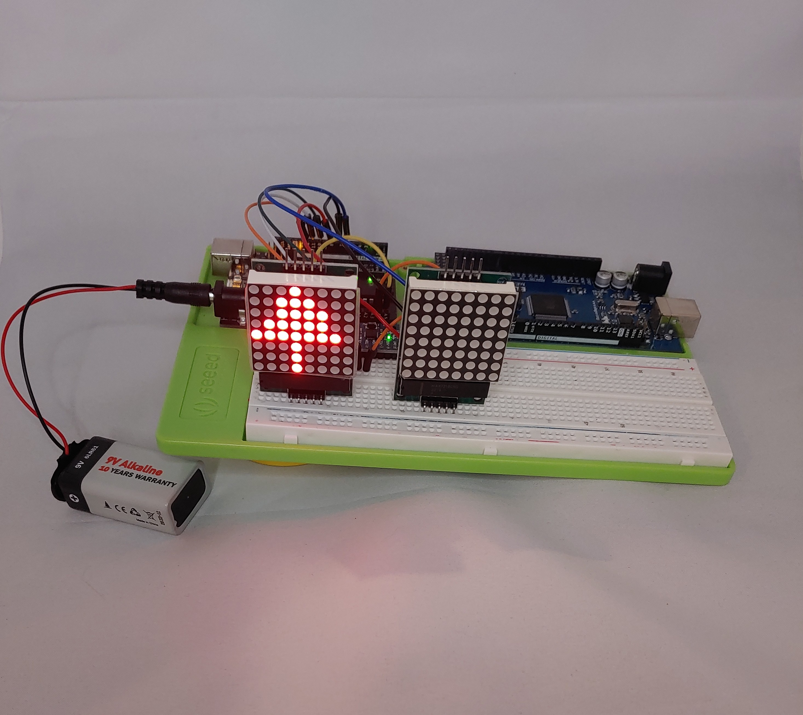
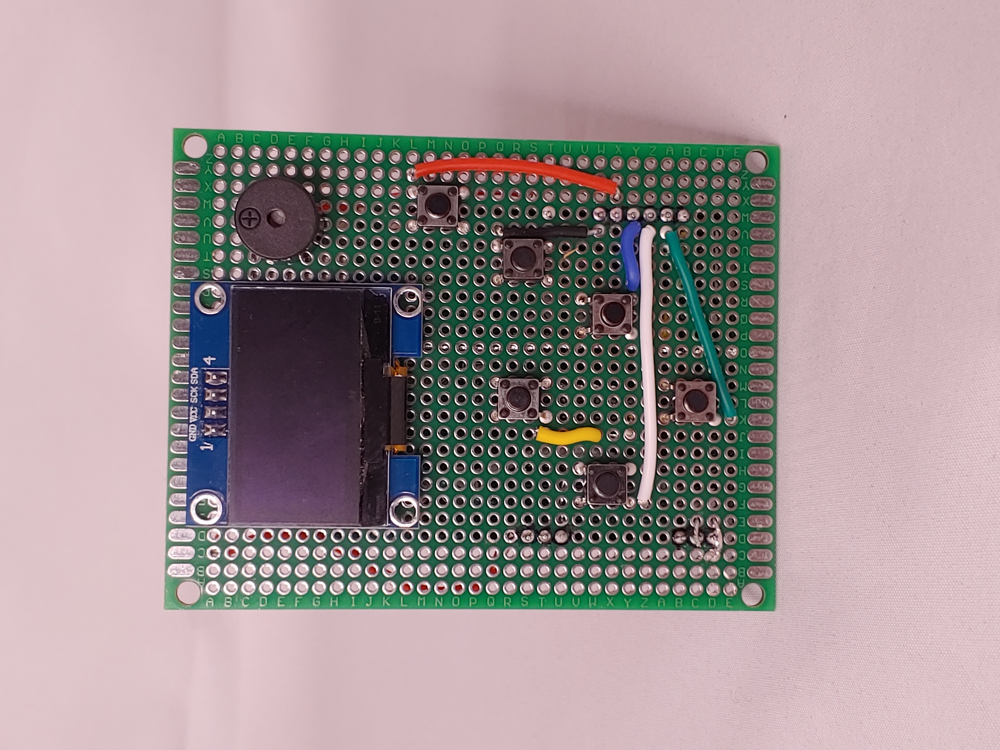
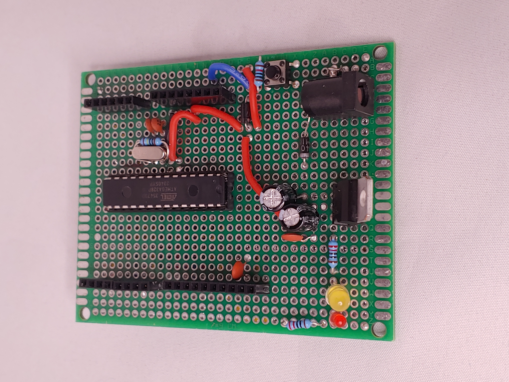

E-Bike Security System
GPS tracking, RFID lock, alarm system, and camera surveillance using Raspberry Pi and Arduino. View on GitHub
AI Camera Alert

Real-time person detection using TensorFlow Lite and Raspberry Pi with alert system. View on GitHub
Arduino Game Console
DIY handheld console with OLED display, buttons, and buzzer using u8g2lib. View on GitHub
Custom Arduino Nano Board
Hand-built breadboard-compatible Nano clone for standalone ATmega328P projects. View on GitHub